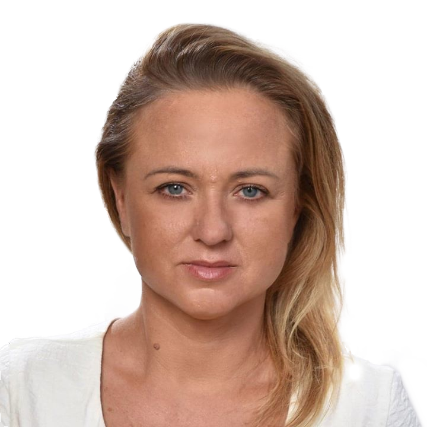

Kilka słów o mnie
Jestem psychologiem o specjalności psychologia kliniczna dziecka, psychologia sądowa, specjalistą psychologii transportu nr ewidencyjny 029/08F, certyfikowanym specjalistą psychoterapii uzależnień nr SP/1339/2017, w trakcie studiów podyplomowych ze specjalizacji z psychologii klinicznej. Studia psychologiczne ukończyłam w 2002 roku na Uniwersytecie im. Adama Mickiewicza w Poznaniu. W 2008 roku ukończyłam studnia podyplomowe na Uniwersytecie Warszawskim z psychologii transportu. Jestem członkiem Stowarzyszenia Psychologów Sądowych w Polsce. Stale podnoszę swoje kwalifikacje uczestnicząc w kursach, szkoleniach i konferencjach obejmujących między innymi tematykę psychoterapii systemowej indywidualnej i rodzin, przemocy seksualnej wobec dzieci, autodestrukcyjnych schematów myślenia u osób uzależnionych i współuzależnionych, pomocy psychologicznej dla rodzin młodzieży z problemami uzależnień, interwencji wychowawczej wobec ucznia dysfunkcyjnego, agresji - budowania systemów bezpieczeństwa. Doświadczenie zawodowe zdobywałam w pracując w Szpitalu Psychiatrycznym dla Dzieci i Młodzieży w Zaborze, oraz w szkolnictwie pracując z dziećmi, młodzieżą oraz ich rodzinami jak również służbach mundurowych. Ponadto odbyłam liczne praktyki w placówkach służby zdrowia oraz opiekuńczych. Od wielu lat pracuję jako psycholog sądowy z młodzieżą i osobami dorosłymi zagrożonymi wykluczeniem społecznym. Od 2004 roku do 2019r. byłam biegłą sądową w zakresie psychologii z rekomendacją Prokuratury Okręgowej w Zielonej Górze. W swojej pracy cenię sobie profesjonalizm i troskę o dobro pacjenta. Kieruję się najwyższymi standardami etyki zawodowej - przestrzegam zasad Kodeksu Etyczno - Zawodowego Psychologa Polskiego Towarzystwa Psychologicznego, zaś swoją pracę poddaję systematycznej superwizji. Pracuję metodą dialogu motywującego, oraz na założeniach terapii skoncentrowanej na rozwiązaniach.
Ukończone szkolenia
Wielkopolskie Towarzystwo Terapii Systemowej – ukończone szkolenie podstawowe 2003/2004r.
Polski Instytut Psychoterapii Krótkoterminowej – Diagnoza kliniczna DSM-IV 2001r.
Centrum Psychoterapii Poznawczo-Behawioralnej – Zespół Nadpobudliwości Psychoruchowej)- 2005r.
Towarszystwo Rozwoju Rodziny- ukończone szkolenie w zakresie profilaktyki i terapii uzależnień behawioralnych 2014r.
Karkonoskie Towarzystwo Psychoprofilaktyczne – ukończone szkolenie z terapii osób uzależnionych od pornogafii, seksu, jako odpowiedź na konsekwencje rozwojowe i zdrowotne u pacjentów Szklarska Poręba 2015r.
Odbyte konferencje
Międzynarodowa Konferencja Naukowo-Szkoleniowa „Przemoc seksualna- perspektywa ofiar i sprawców”- Poznań 2016r.
.svg)
Polskie Towarzytwo Psychiatryczne „Psychiatria-Możliwości Rozwoju” – Gniezno 2002r.
Polskie Towarzystwo Balintowskie „Komunikacja interpersonalna w procesie pomagania” – Zielona Góra 2002r.
Uniwersytet Zielonogórski „Zrozumieć dziecko z FASD”- Zielona Góra 2018r.
Biuro Profialktyki i Przeciwdziałania Uzależnieniom Miejskiego Ośrodka Pomocy Społecznej w Zielonej Górze „ Alkohol a przemc w rodzinie”- Zielona Góra 2019r.
Fundacja Dziecko w Centrum „ wsparcie osób pokrzywdzonych przestępstwe- perspektywa prawna, psychologiczna i społeczna” -Poznań 2020r.
Sekcja Psychologii Sądowej – „7 konferencja psychologii sądowej” – Kraków 2014r.
Uniwersytet im. Adama Mickiewicza „ III Krajowa konferencja z psycholgii klinicznej” – Poznań 2018r.
Klinika Psychiatrii Dorosłych Uniwersytet Medyczny „ Neuropsychiatria i Neuroposychologia” -Poznań 2019r.
Oferta
- uzależnień, w tym behawioralnych,
- współuzależnienia
- radzenia sobie z depresją, lękami
- w trudnościach rozwojowych i kryzysach emocjonalnych,
- w trudnościach w kontaktach społecznych (relacji z rówieśnikami).

Pomoc dzieciom
- w sytuacjach trudnych, stresujących (konflikty szkolne, rodzinne, rozwód rodziców, straty, adaptacja)
- w depresjach i lękach
- w zaburzeniach zachowania, zaburzeniach jedzenia
Pomoc tym którzy
- mają trudności i nie wiedzą jak sobie z nimi poradzić – pragną zmiany w sobie i swoim życiu
- szukają równowagi, harmonii i satysfakcji w życiu prywatnym i zawodowym
- czują się samotni i niezrozumiali
- cierpią na choroby psychosomatyczne
- stoją w obliczu straty, rozstania, konfliktu, poważnej decyzji życiowej

Formy Pomocy
KONSULTACJA PSYCHOLOGICZNA
Konsultacja psychologiczna jest psychologicznym świadczeniem zdrowotnym, które dotyczy badania stanu psychicznego pacjenta metodami psychologii klinicznej. Konsultacja psychologiczna jest oceną stanu psychicznego, rozumianą jako specjalistyczne postępowanie obejmujące: psychologiczną diagnozę problemową (może mieć ona charakter opisowy bądź różnicowy, stanowić diagnozę cząstkową lub całościową) oraz sformułowanie wskazań dotyczących dalszego postępowania z pacjentem. To od jednego do trzech spotkań, podczas których zbieram kompleksowy wywiad psychologiczny, określam wstępnie rodzaj problemu oraz wraz z pacjentem szukam różnych sposobów jego rozwiązania.

PORADA PSYCHOLOGICZNA
Porada psychologiczna jest specjalistycznym świadczeniem zdrowotnym nastawionym na rozwiązanie zgłaszanego przez pacjenta, jego rodzinę lub opiekuna problemu. Porada obejmuje:
- wstępną rozmowę , otwierającą kontakt,
- wywiad i obserwacje,
- określenie problemu,
- zakończenie kontaktu poprzez przekazanie pacjentowi obserwacji i wyjaśnień lub/i skierowanie go do odpowiedniej dla niego formy leczenia.
Porada może obejmować pomoc psychologiczną i/lub dodatkowe kontrolne badania psychologiczne.
Specyficzną formą porady jest wizyta psychologa w domu pacjenta.

PSYCHOLOGICZNA INTERWENCJA W KRYZYSIE
Specjalistyczne świadczenie zdrowotne polegające na udzielaniu pomocy w psychologicznym kryzysie wywołanym chorobą lub innymi okolicznościami. W stanie ostrego kryzysu potrzebna jest natychmiastowa pomoc trwająca aż do ustąpienia objawów. To forma pomocy, która skierowana jest do tych z Państwa, którzy borykają się z problemami nagłymi. Interwencja w kryzysie to forma pomocy, która ma na celu przywrócenie równowagi, poczucia bezpieczeństwa, odzyskanie umiejętności radzenia sobie i obniżenie lęków.
.svg)
TERAPIA PSYCHOLOGICZNA
Terapia psychologiczna jest specjalistycznym świadczeniem zdrowotnym udzielanym przez psychologa pacjentowi i/lub jego rodzinie, czy też opiekunowi. Celem terapii psychologicznej jest osiągnięcie przez pacjenta optymalnego poziomu funkcjonowania. Korzystając z terapii pacjent ma możliwość poznania i zrozumienia siebie i swoich zachowań w różnych sytuacjach. W trakcie terapii uzyskiwany będzie wgląd i zrozumienie źródła problemu/trudności. Terapię psychologiczną zwykle winna poprzedzać porada psychologiczna i/lub konsultacja psychologiczna. Terapia psychologiczna jest podstawową, zwyczajowo pierwszą formą pomocy psychologicznej pacjentowi i/lub jego rodzinie/opiekunowi.
TERAPIA UZALEŻNIEŃ
Terapia uzależnień to proces mający prowadzić do zaprzestania lub zmniejszenia częstotliwości przyjmowania substancji psychoaktywnych. Terapia uzależnień behawioralnych to proces mający prowadzić do zaprzestania lub zmniejszenia zachowań problemowych.

DIAGNOZA PSYCHOLOGICZNA
Diagnoza w psychologii polega na opisie pozytywnych i negatywnych właściwości psychicznych oraz psychologicznych mechanizmów funkcjonowania jednostki, wyjaśnianiu problemów w funkcjonowaniu tej jednostki oraz prognozie skutków zachowań i zjawisk i możliwości modyfikowania tego co problematyczne w funkcjonowaniu. Ma na celu ustalenie mechanizmów psychologicznych, przyczyn oraz stopnia nieprawidłowości w różnych sytuacjach życiowych. W diagnozie psychologicznej posługuję się obserwacją, wywiadem oraz testami psychologicznymi atestowanymi przez Polskie Towarzystwo Psychologicznego. Wykonuję następujące badania: badania osobowości, badania ilorazu inteligencji, badania neuropsychologiczna.
Cennik
Konsultacja neuropsychologiczna
150 zł
Poradnictwo dla rodziców
120 zł
Psychoedukacja
120 zł
Psychoterapia dzieci
120 zł
Psychoterapia indywidualna
120 zł
Psychoterapia rodzinna
150 zł
Psychoterapia uzależnień
120 zł
Psychoterapia uzależnień i współuzależnienia
120 zł
Testy psychologiczne
150 zł